Tres máquinas que piensan con un PLC
Una guillotina, un portón y una cinta que separa metal de plástico y aplasta las latas. Las armamos, las programamos en Grafcet y escalera, y aquí puedes manejarlas tú.
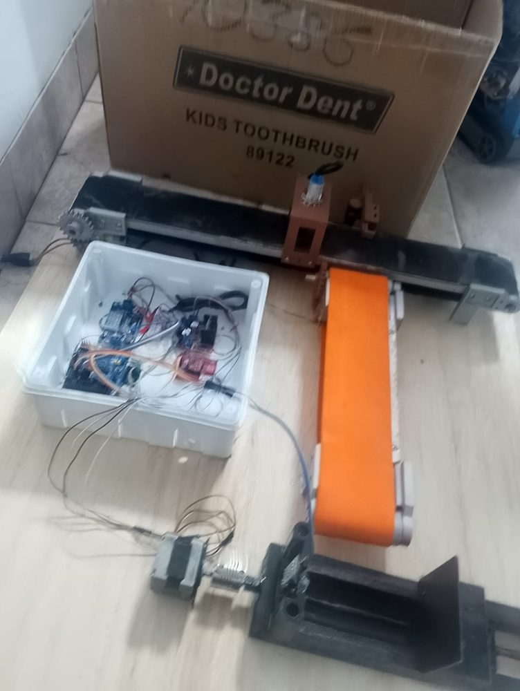
Dos laboratorios y un proyecto
Cada uno tiene su resumen, fotos del montaje real, los programas y un simulador para probar la lógica sin tocar el hardware.
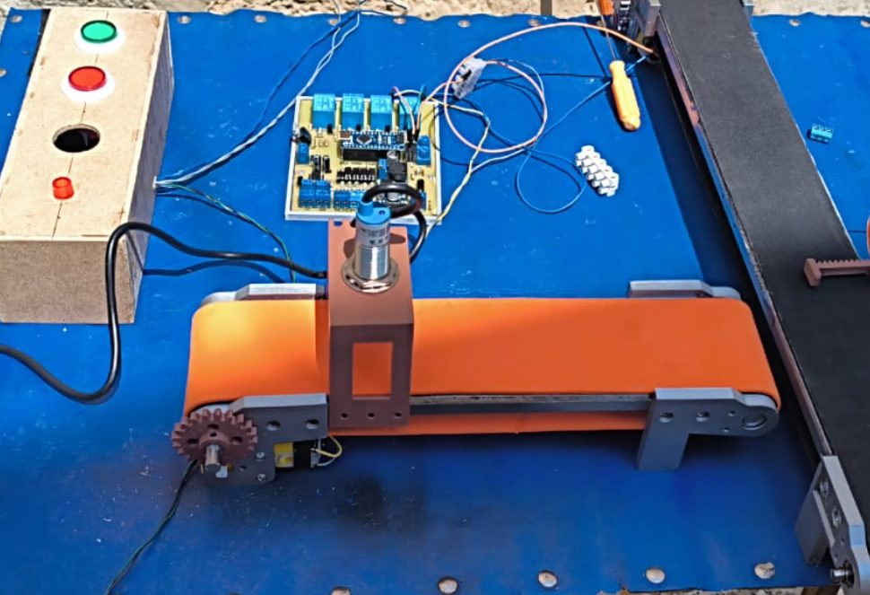
Guillotina industrial
Corta durante 3 s, cuenta 10 piezas y avisa con un piloto que parpadea.
Ver y probar →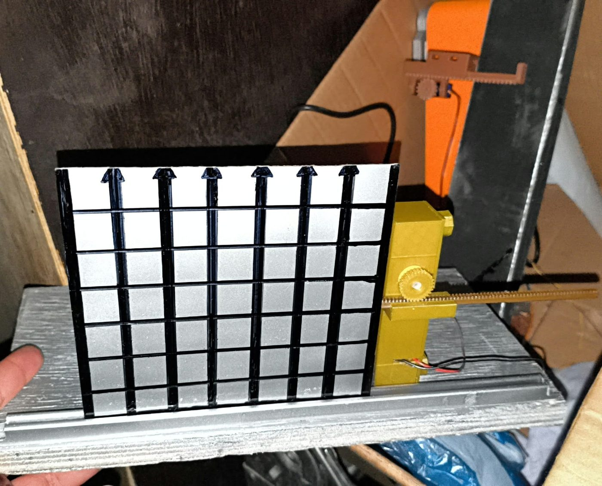
Portón automático
Abre, se cierra solo a los 30 s y se detiene con una emergencia que solo se libera con Reset.
Ver y probar →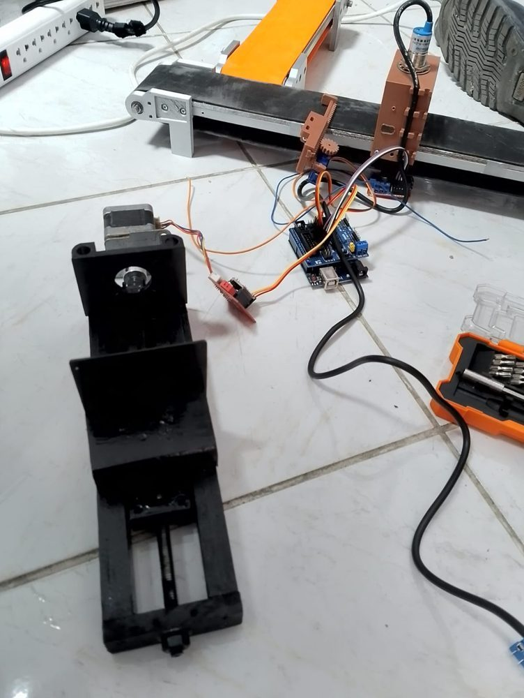
Cinta clasificadora
Separa metal de plástico, empuja el metal a una segunda banda y lo aplasta 4 cm.
Ver y probar →Elige una simulación
Cada botón te lleva directo al simulador de esa máquina. Ahí puedes presionar los pulsadores y ver cómo responde el programa.
Guillotina industrial
Una guillotina a escala que corta plástico a medida. Una cinta lleva el material hasta la zona de corte, la hoja baja 3 segundos y una segunda cinta cuenta las piezas que salen.
Al llegar a un lote de 10 piezas todo se detiene y un piloto parpadea. El pulsador de parada la frena en cualquier momento. Es el ejercicio 9 del Capítulo III, Contadores.
▶ Ir a la simulación de la guillotina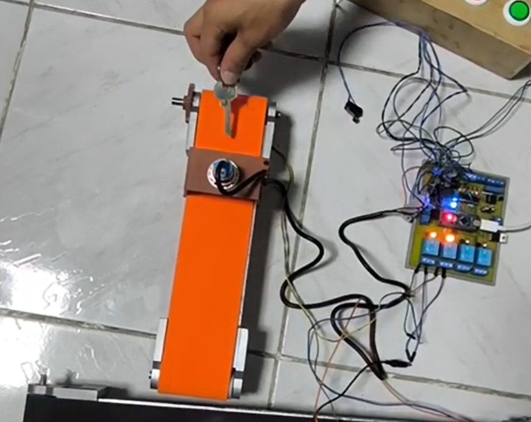
Cómo funciona
Marcha
El pulsador verde arranca las dos cintas y deja el sistema enclavado.
Llega al corte
El final de carrera detecta el material y la cinta de entrada se detiene.
Corta
La hoja baja durante 3 s, controlados por un temporizador TON.
Cuenta
El sensor de salida cuenta cada pieza. A las 10 se detiene y el piloto parpadea cada 0,5 s.
Simulador de la guillotina
Línea de corte y conteo
Programa corriendoPon material en la cinta, arranca con Marcha y mira cómo la lógica corta, cuenta y se detiene en 10.
Activa el material automático, presiona Marcha y espera a las 10 piezas. Marcha otra vez reinicia el conteo. Parada detiene todo, incluso con la hoja abajo.
Contador de piezas
Entradas del PLC
Salidas y memorias
La maqueta real
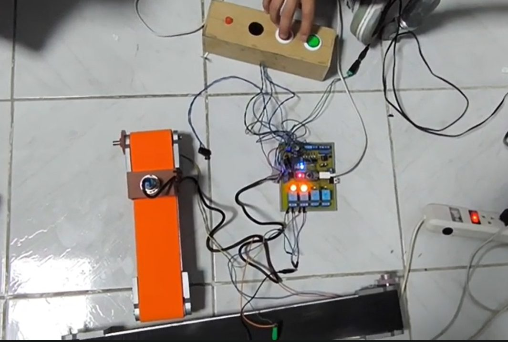
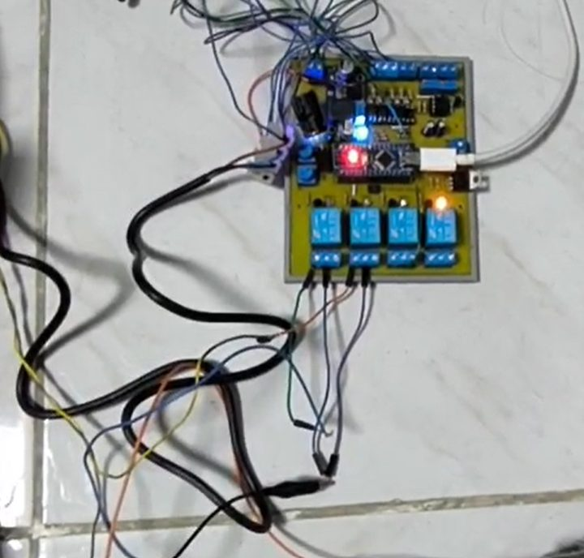
Detrás del programa
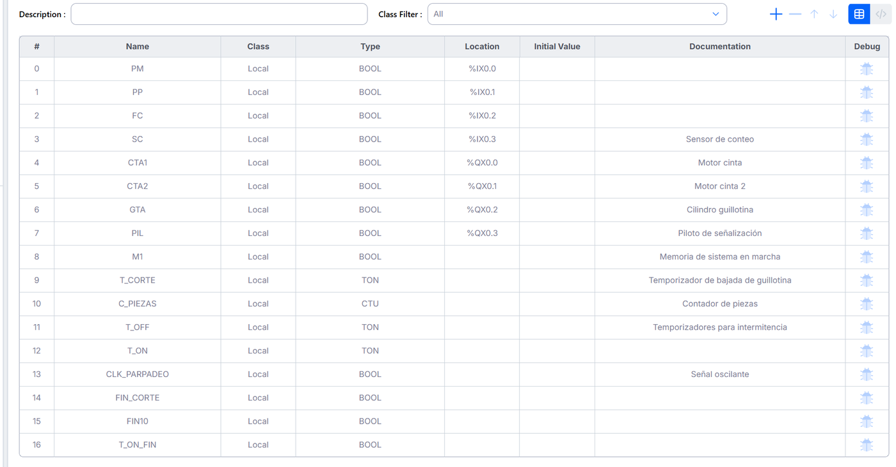
Entradas, salidas, memorias, temporizadores y el contador, tal como se declararon en OpenPLC Editor.
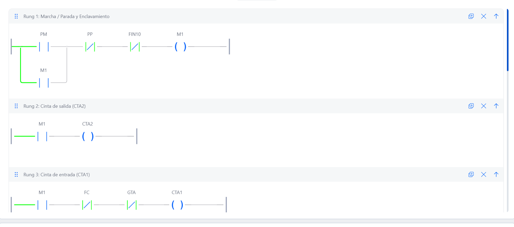
M1 es la memoria de «sistema en marcha»: se enclava con PM y se apaga con PP o al completar el lote.
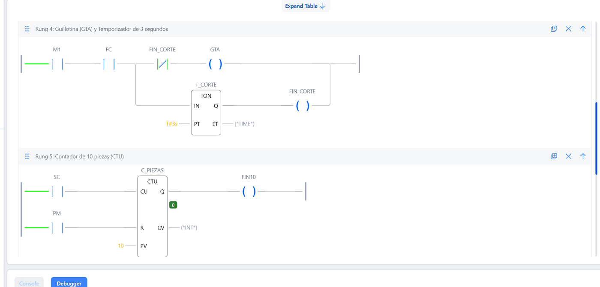
El TON de 3 s sube la hoja sin necesitar otro sensor. El CTU cuenta en la cinta de salida y se reinicia con PM.
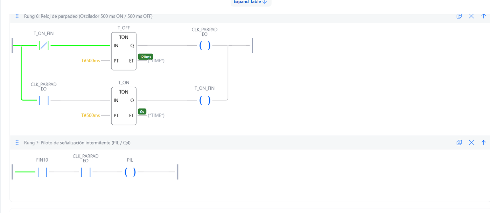
Dos temporizadores cruzados generan el reloj del parpadeo dentro del propio programa.
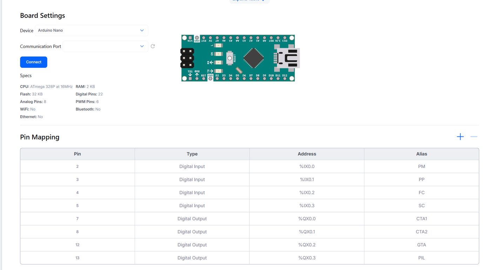
Cuatro entradas en los pines 2 a 5 y cuatro salidas en los pines 7, 8, 12 y 13.
Portón automático
Un portón corredizo a escala sobre un riel de aluminio, movido por un motorreductor con piñón y cremallera. Lo gobierna una placa OpenPLC MicroPLC Nano V1.2, programada en escalera a partir del Grafcet que resolvió el docente en clase.
Se abre con un pulsador, se cierra solo a los 30 segundos y avisa su estado con tres luces. Una emergencia lo detiene; para seguir hay que presionar Reset, que lo cierra y lo devuelve al inicio.
▶ Ir a la simulación del portón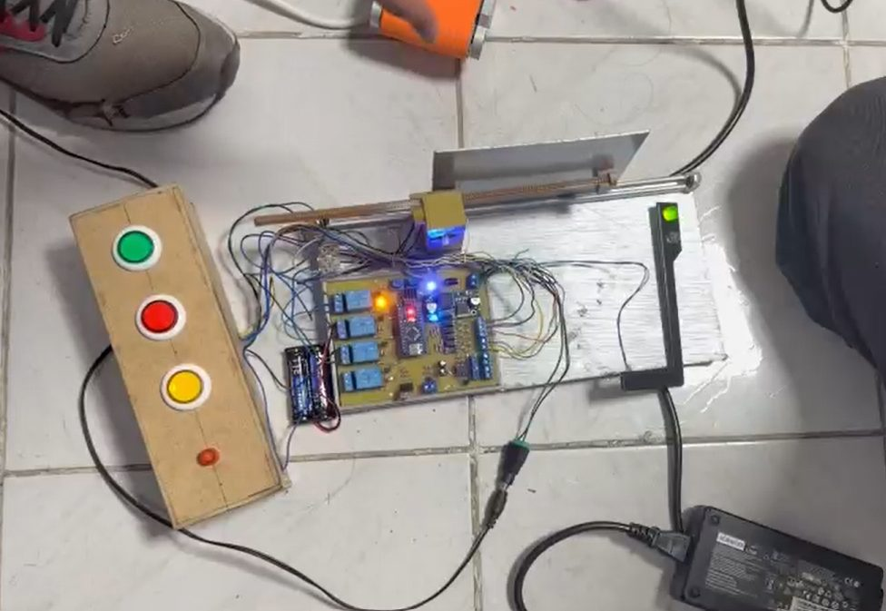
Cómo funciona
Cerrado
Luz roja. Espera que alguien presione el pulsador verde.
Abriendo
Luz amarilla mientras el motor mueve el portón hasta el final de carrera de abierto.
Abierto
Luz verde y arranca un temporizador de 30 s.
Cerrando
Cierra por pulsador o a los 30 s, otra vez con luz amarilla, y vuelve a rojo.
Con el paro de emergencia todo se apaga y el portón no se mueve hasta que se presiona Reset.
Simulador del portón
Caja de mando virtual
Programa corriendoPresiona los tres pulsadores como en la maqueta. La lógica es la misma escalera del informe, escalón por escalón.
Prueba esto: abre, deja pasar los 30 s (usa x10 para acelerar), presiona Emergencia en pleno movimiento y recupera con Reset.
Etapa activa del Grafcet
Temporizador TIM1 (30 s)
Entradas del PLC
Salidas del PLC
La maqueta real
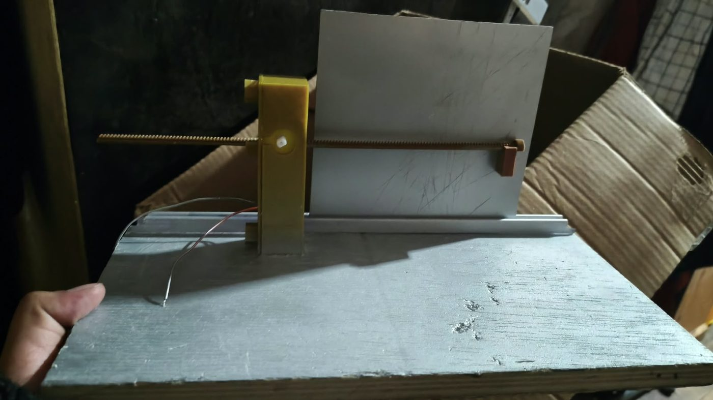
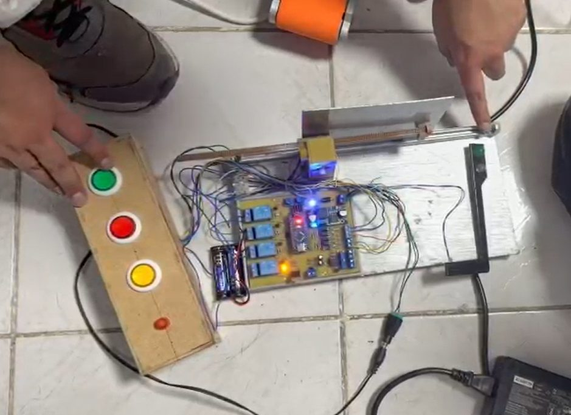
Detrás del programa
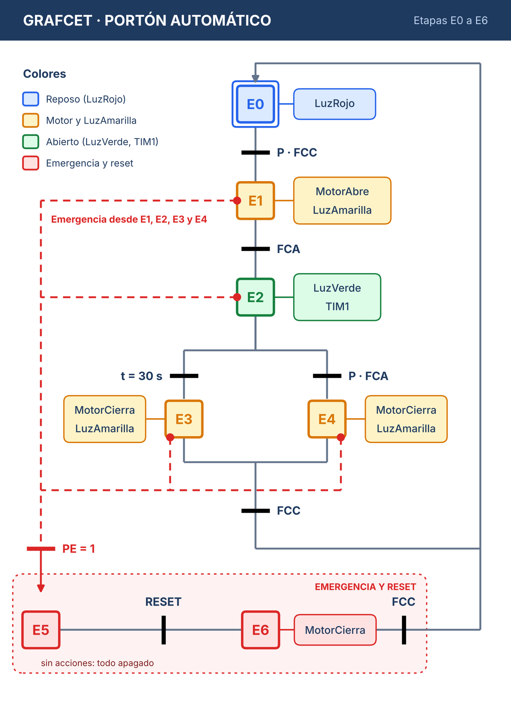
Siete etapas: ciclo normal de E0 a E4 y ruta de emergencia en E5 y E6. Solo una etapa está activa a la vez.
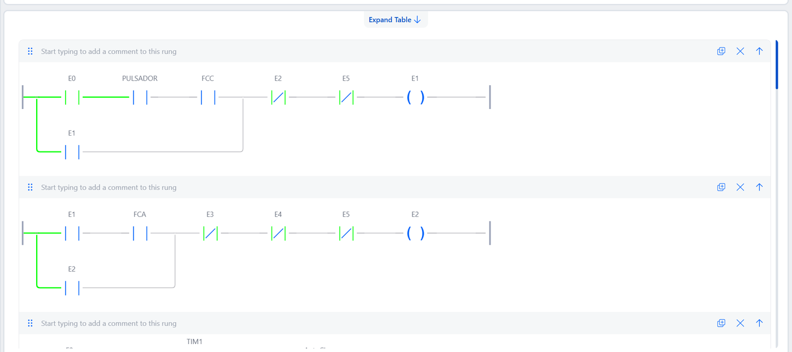
Cada etapa es una variable con su escalón: se activa, se mantiene con un contacto de retención y se apaga cuando entra la siguiente.
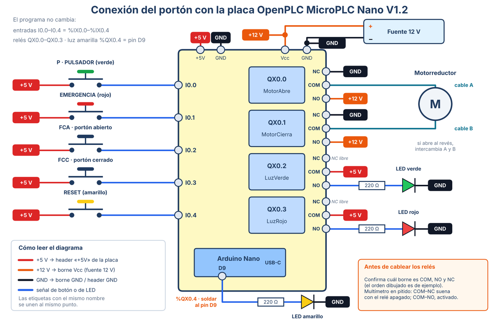
Dos relés forman el puente H del motor, otros dos manejan las luces verde y roja. La amarilla sale directo del pin D9 con un LED y una resistencia de 220 Ω.
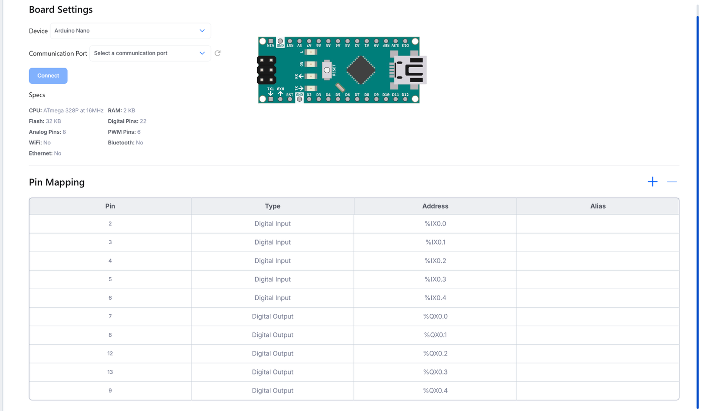
Cinco entradas en los pines 2 a 6 y cinco salidas en los pines 7, 8, 12, 13 y 9.
Cinta clasificadora con compactadora
Un prototipo físico de dos bandas que separa residuos metálicos de plásticos y aplasta los metálicos. Un sensor inductivo detecta el metal, un servomotor con piñón y cremallera lo empuja a la segunda banda y un motor paso a paso con tornillo de avance lo compacta 4 cm.
La lógica se validó primero en C++ con un Arduino Uno. La versión final reparte el trabajo: el PLC dirige la secuencia y el Arduino mueve el servo y el paso a paso.
Cómo funciona
Entra una pieza
La banda 1 la lleva. Si es plástico, no activa el sensor y sigue hasta el contenedor.
Detecta metal
El sensor inductivo la ve. A los 0,7 s la banda 1 se detiene frente al desvío.
La desvía
El servo gira de 0° a 180° y la cremallera la empuja a la banda 2.
La compacta
El sensor infrarrojo avisa: el motor avanza 4 cm, pausa 0,3 s y retrocede.
Estado: la versión en C++ con Arduino Uno está probada con el prototipo. La integración con el PLC está diseñada en Grafcet y escalera, y falta montarla.
Simulador de la cinta
Clasificar y compactar
Programa corriendoSuelta piezas sobre la banda 1 y observa las dos máquinas de estados: la del metal y la de la compactadora corren a la vez, sin esperarse.
Metal: cuadrado plateado. Plástico: círculo naranja. Si sueltas dos piezas muy juntas verás por qué deben ir separadas: la banda 1 se detiene 1,2 s y arrastra a todas.
Máquina del metal
Máquina de la compactadora
Resultados
Sensores y actuadores
Pasos del motor: 0 de 1000 (4 cm)
El prototipo real
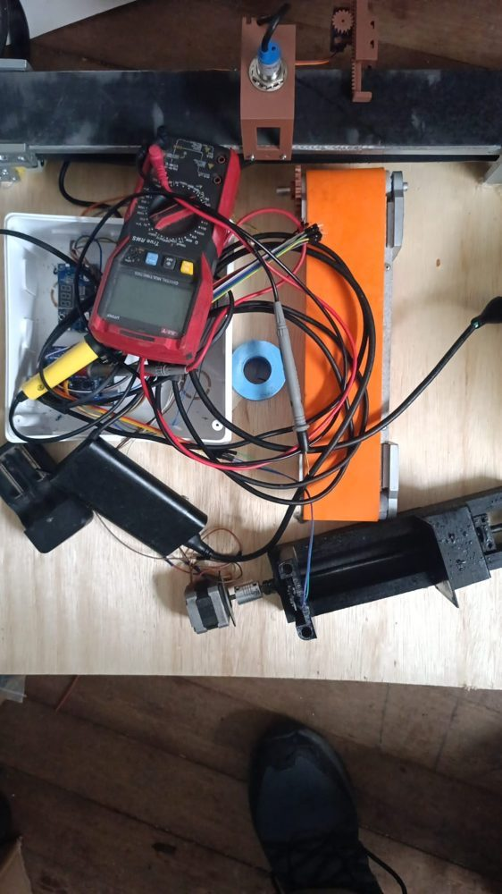
Detrás del programa
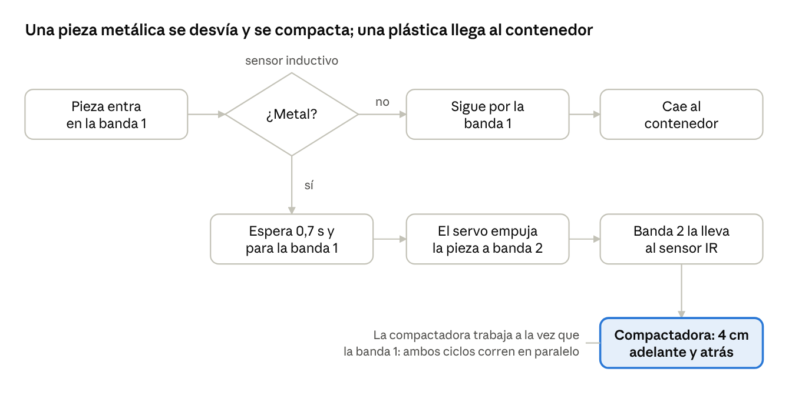
Las piezas plásticas nunca activan el sensor inductivo y siguen hasta el contenedor. Las metálicas se desvían y llegan a la compactadora.
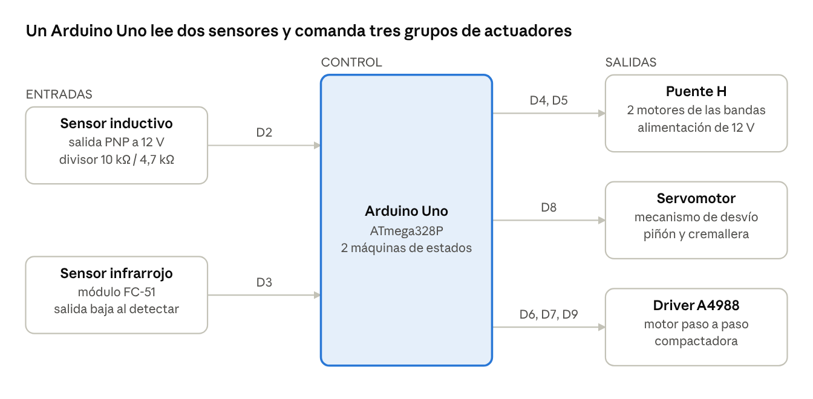
Un Arduino Uno lee los dos sensores y comanda las bandas, el servo y el driver A4988, cada grupo con sus propios pines.
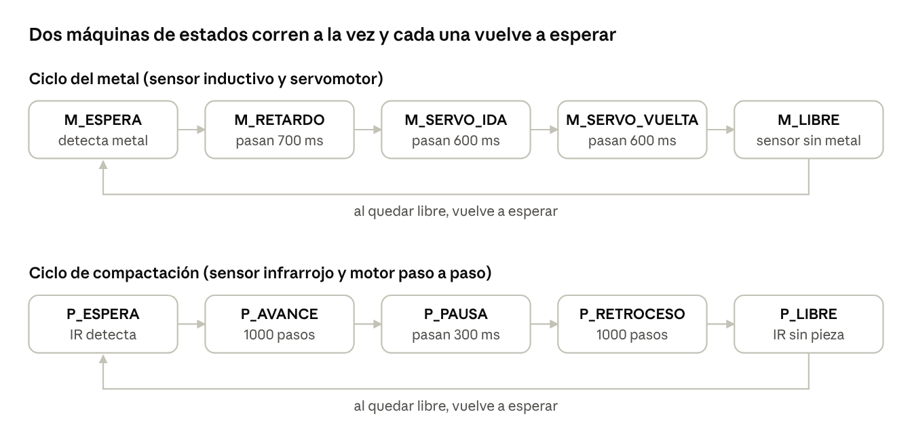
Cada máquina avanza un estado por pasada de loop(), sin delay largos, así ninguna espera a la otra.
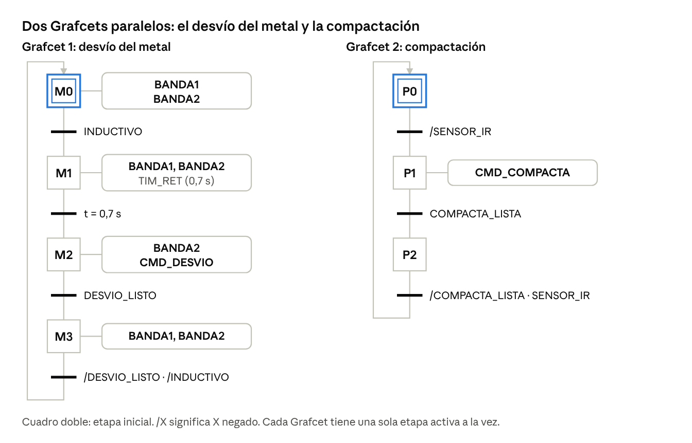
Dos Grafcets paralelos, cada uno con una sola etapa activa, igual que las dos máquinas de estados del código.
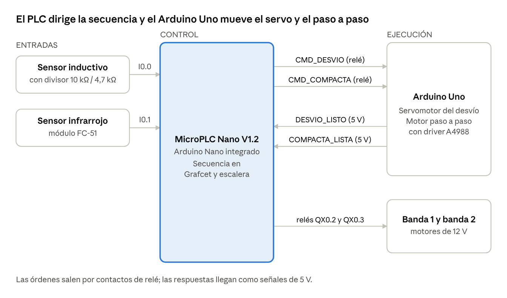
El PLC manda dos órdenes por contactos de relé y el Arduino responde «listo» cuando termina cada movimiento.
El equipo
Cinco estudiantes de Ingeniería de Sistemas trabajaron en los dos laboratorios y en el proyecto.
Marcos Alexander Panozo Patty
Ario Mauricio Chacon Orosco
Marcos Javier Vargas Callizaya
Cris Kleber Ballon Chipana
Adrian Edwin Aguirre Rojas
Facultad de Ingeniería, Ingeniería de Sistemas. Programación de Sistemas Embebidos, docente Ing. Omar Poma Laura. La Paz, Bolivia, 2026.